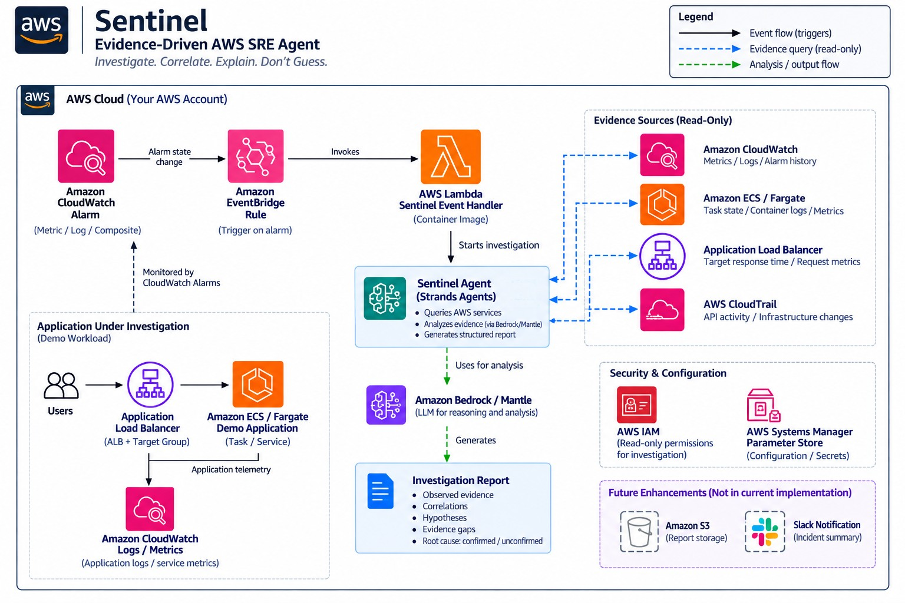

INVESTIGATE · CORRELATE · EXPLAIN · DON'T GUESS
Incident investigation, without pretending uncertainty is certainty.
Sentinel correlates alarm, metric, telemetry, ECS, and CloudTrail evidence, then separates observed facts from hypotheses and unknowns.
FINAL EVALUATION
5/5
Report scenarios100%
Reviewer convergence5/5
INVESTIGATION REPORT
single_slow_request
PASS
Observed evidence
Correlations
Hypotheses · unconfirmed
Evidence gaps / unknowns
ROOT CAUSE DETERMINATION
UNCONFIRMED
EVENT-DRIVEN AWS PATH
CloudWatch Alarm→EventBridge→Lambda→Sentinel→AWS Evidence→Investigation Report
